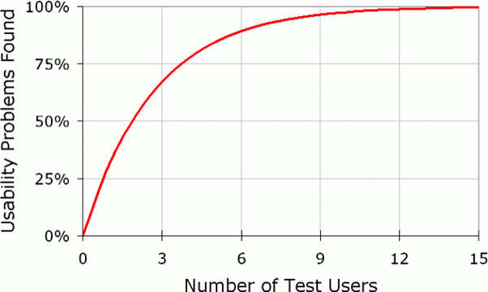

Administrative detaljer
Klient: Johannes Haar
Nettsidenavn: KLPP.
Kontaktperson: Johannes Haar
Link til nettsiden: klikk her
P4 testing
Oda Tillman, Sven Herman Holmsen, Maja Meland, Philip Tinius Hansen Crome, Dag Hara
IT2805 5. november 2020
Klient: Johannes Haar
Nettsidenavn: KLPP.
Kontaktperson: Johannes Haar
Link til nettsiden: klikk her
Vi valgte å benytte oss av direkte intervjuer i brukertestene våre. Det vil si at minst en eller flere av gruppas medlemmer satte seg ned med en tester og fikk respons der og da. Vi valgte dette fremfor google forms da dette ga oss en mer reell oppfatning av hvordan brukerne valgte å gå frem på siden, og hvilke problemer de støtet på. Dette er problemer de kanskje ikke ville ha lagt merke til selv, eller som vi ikke ville tatt høyde for i en eventuell test med form.
Forskning viser at ved direkte testing vil man få frem ca 75% av problemene ved å bare bruke fem testpersoner. Dermed, i et tids- og ressursperspektiv, er det mer effektivt med direkte testing med få personer fremfor store undersøkelser med mange spørsmål sendt til masse testpersoner. Noe som igjen ville gitt masse data som deretter måtte prosesseres til funn og konklusjoner.
Ved direkte testing vil innsikten etter kun én testperson stige raskt, og man vil allerede da ha lært mye av problemene ved grensesnittets brukervennlighet. Etter testperson nr to vil flere av de samme problemene, i tillegg til noen nye dukke opp. Desto flere personer som tester prosjektet, desto mindre nye problemer vil bli oppdaget for hver ekstra tester. Dette er fordi de ulike personene vil finne de samme feilene. Hvis nye testpersoner finner de samme mønstrene som allerede er belyst så er dette et argument for at man ikke trenger flere testpersoner. Med flere testpersoner vil nye oppdagelser være få og små, og man bør derfor ikke investere mye mere tid og ressurser på det. Derfor er det bedre å slutte etter fem tester, løse problemene som ble belyst, for så å eventuelt gjøre en ny testrunde. Diagrammet under viser sammenhengen mellom antall brukertester og antall brukervennlighetsproblemer som blir oppdaget. Her ser en enkelt at det er de første fem testene som gir mest gevinst i form av antall problemer sammenlignet med de fem siste testpersonene.
Figur: Diagram som viser sammenhengen mellom antall brukertester og antall problemer ved brukergrensesnittet som blir oppdaget.
Figur: Mal for brukertest.
I vår test-undersøkelse ble det gjennomført åtte unike direkte intervjuer. Slik forskningen tilsier opplevde vi at etter fem tester var det meste repetisjon, og de aller fleste og betydelige problemene hadde allerede blitt nevnt. Vi valgte å ta tre ekstra tester da disse fremdeles kunne gi oss informasjon, og samtidig fungerte som en bekreftelse på at ikke noe hadde blitt oversett i de tidligere testene. Etter åtte testpersoner anså vi det som lite ressursnyttig å fortsette med direkte intervjuer. Dessuten er en oppdagelsesprosent av problemer på over 80% en dekkende grense som gir oss nok data å jobbe med.
Under brukertesten ba vi testeren tenke høyt og forklare hvorfor h*n gjorde det h*n gjorde (aloud-thinkning-method). På denne måten kunne vi observere hvordan testeren møtte ulike problemer, samt hvordan h*n valgte å håndtere problemet.
I forkant av testene lagde vi en mal med ulike spørsmål og oppgaver som brukerne skulle løse på nettsiden. Ved å holde oss til denne malen kunne vi gjennomføre gode og effektive brukertester uten å sløse tid. Ved å benytte oss av samme mal i alle testene var vi også i stand til å sammenligne resultatet fra testene, og da enkelt vurdere alvorlighetsgraden av et problem, og hvor problemet oppsto.
Ettersom vår klient er en frisørsalong, er vår målgruppe mennesker som ønsker å klippe håret. Dette er en gruppe som dekker alle aldre i alle samfunnsgrupper. For å oppnå best mulig resultat på brukertestene ønsket vi derfor å nå ut til en mest mulig variert testgruppe. Totalt testet vi fire studenter fra ulike studier (50%), tre voksne i arbeid (37,5%) og en eldre kvinne (12,5%). I alle testene brukte vi samme intervjuformat. Grunnet korona valgte vi å begrense antall gruppemedlem tilstede under brukertestene.
Mye av responsen og observasjonene vi gjorde var lik i de ulike brukertestene. Vi så likevel en verdi i å ha testpersoner med ulik bakgrunn, da de kommenterte på litt ulike egenskaper ved nettsiden. En student kunne for eksempel være mer opptatt av hvor lang tid det tok å bestille en time, mens de som var litt eldre satte pris på at man lett kunne finne informasjonen man ønsket.
Alle testene ble gjort på datamaskin i forskjellige nettlesere (Chrome, Edge, Firefox, Safari) og med varierte bredder på vinduet (fra 450px til 1920px). Testene ble gjort i rolige omgivelser for å redusere eksterne forstyrrelser.
Brukertestene var nyttig, og ga mye konstruktiv tilbakemelding. Responsen var generelt positiv, samtidig som det ble lagt lys på flere områder som kunne forbedres for å skape et bedre grensesnitt og en mer brukervennlig nettside.
Samtlige av testerne opplevde siden som oversiktlig, forståelig og at det var lett å finne frem. Det minimalistiske designet ble ofte trukket fram som positivt, og valg som at siden man er på blir oransje i menybaren var noe vi fikk god tilbakemelding på.
Det ble funnet noen små skrivefeil i nettsiden, noe som kan svekke helhetsinntrykke og gi en følelse av lite profesjonalitet og pålitelighet.
Problemene testerne møtte, befant seg stort sett på "bestill time" og "søk job" sidene. Det ble tidlig oppdaget at det var forvirrende å fylle ut hvilke behandlinger man skulle ha på "bestill time"-siden da man ikke fikk noen bekreftelse på at det man hadde huket av var valgt. Uten en bekreftelse virket det som at siden ikke registrerte valgene, og flere kom med tilbakemelding om at behandlingene burde stå i innfylingsfeltet. Et lignende problem oppsto på "søk jobb"-siden hvor man ikke fikk en bekreftelse når man lastet opp en fil.
Videre oppdaget vi at det noen ganger oppsto litt forvirring da brukeren skulle velge ønsket frisør på "bestill time"-siden. Kunden hadde ingen forutsetning til å vite hvilken stilling de ulike frisørene hadde. Hvis kunden for eksempel ville ha en lærling, måtte den gå ut av bestillingssiden og inn på om oss-siden for å finne informasjon om stillingene der. Dette kunne oppfattes som kronglete.
En annen tilbakemelding vi fikk av flere testere var at footeren til nettsiden blir overdrevet når man gjør vinduet mindre. Dette er spesielt åpenbart når man er på hjemmesiden, hvor footeren sklir lengre opp på siden jo mindre vinduet blir.
En siste tilbakemelding som vi fikk var ved smalere skjermer. Om man klikker på burgermenyen i menybaren når man har scrollet seg litt lengre ned på siden er man nødt til å scrolle seg til toppen igjen for å komme seg til en annen side. Da blir poenget borte med med at menybaren er festet til toppen til en hver tid.
I behandlingen av brukertestene fant vi ut at vi skulle differensiere mellom store og små feil og håndtere dem deretter. De større feilene kom vi frem til at vi ville ha endret på i en endelig versjon av siden, mens vi tok tak i de mindre feilene fortløpende.
Vi fikset blant annet opp i skrivefeilene som ble oppdaget fortløpende.
Vi la til stillingsbeskrivelse bak de ulike frisørene man kunne velge på bestill time-siden. Denne endringen var enkel, men avgjørende for å gjøre timebestillingen så flytende som mulig.
Angående forvirringen rundt mangel på bekreftelse når man velger behandlinger, så vi på det som problematisk. I en endelig versjon av siden ville vi ha løst dette problemet ved å for eksempel få opp de valgte behandlingene i det relevante input-feltet, eller liste dem opp under.
Dersom vi hadde hatt en database ville vi hatt en bekreftelse på at valgt fil er lastet opp når man laster opp CV, men siden dette ikke var et krav i oppgaven lot vi være å gjøre det.
Når det kommer til det at footeren begynte å krype oppover siden ved smalere skjerm, har vi kun fikset på, på hjemmesiden. Vi fjernet "bilde-showet" når bredden på skjermen blir mindre enn 1000px, og har heller lagt de samme bildene under hverandre slik at footeren blir presset lengre ned på siden og det blir en mulighet for å scrolle på denne siden. Til en eventuell videre utvikling av nettsiden kan vi gjøre at høyden på footeren blir lavere ved smalere skjerm. Og når det kommer til tilbakemeldingen om at man alltid må være på toppen for å komme seg til en annen siden ved smalere skjermer, har vi ikke hatt tid til å endre på dette denne gangen . Dette er en tilbakemelding vi tar med oss til en eventuell videreutvikling av nettsiden.
Gruppeprosjektet har vært omfattende, og det har til tider vært flere baller å holde i luften samtidig. Det har vært vanskelig innimellom, men alle i gruppen har vært oversiktlige og fulgt med på den overordnede planen. Prosjektet har gitt et enormt læringsutbytte og stor mestringsfølelse, særlig på oppgaver som var antatt enkle men viste seg å bli store, tidkrevende problemer. Alle sammen har fått et innblikk i hva som kreves av en nettside og hvordan denne lages, helt fra idéprosessen og til et endelig produkt.
I en studenttilværelse er det ikke til å legge skjul på at dette emnet er et av flere fag som vi jobber med. Det har gitt noe kollisjoner med tanke på andre oppgaver og prosjekter som må fullføres samtidig. Det har vært en utfordring å balansere dette, men det gikk fint til slutt. Samtlige sitter igjen med en følelse av at vi startet tidlig på prosjektet, og har hatt god progresjon gjennom høsten. Likevel oppsto det problemer da vi ikke klarte å møte de satte fristene. Det kommer av at noe vi trodde var enkelt å løse faktisk var vrient og mye mer tidkrevende enn først antatt. Dette medførte til at det ble litt mer intens jobbing på slutten av prosjektet for å få det i havn innen fristen.
Den gode progresjonen er et resultat av at vi har hatt faste og ukentlige møter hver fredag. Møtetidspunktet og oppmøte passet alle sammen, men korona og smittehensyn har definitivt hindret oss i at alle alltid er på møtet. Vi har løst dette med å møtes på zoom, selv om det ikke er like givende og engasjerende sammenlignet med å jobbe alle sammen. I tillegg til de faste fredagsmøtene våre har vi også møttes annenhver onsdag/tirsdag for å jobbe sammen eller å snakke med veilederen vår. Den siste uken før innlevering av oppgaven var vi også flinke til å møte hverandre for å fikse siste småpirk på nettsiden samt kjøre tester på folk.
Noen av de egenskapene vi ønsket å inkludere i nettsiden ble svært utfordrende å få til i realiteten. Dette kom av at det ikke fantes noen direkte god løsning på problemet uten å bruke metoder som ikke var tillatt, eller at det rett og slett var veldig komplekst å få til. Dette var bl.a tilfellet med utfyllingen av dato ved timebestilling. I utgangspunktet ønsket vi at man kun skulle være i stand til å velge “ledige” tidspunkt. Dette ble krevende da vi isåfall måtte ha et sted å hente den informasjonen fra, eller funnet en måte å generere falske tall. Vi fant imidlertid et god alternativ løsning på problemet.
Et annet tilfelle er kartet vi bruker på "om oss"-siden. Her var ønsket å ha et interaktivt kart. Dette fikk vi til, men klarte ikke å rette opp i feilmeldingen som fulgte med. Det viste seg å være noen advarsler når det kom til bruke av API og google maps. Det virker som det har noe å gjøre med en feil versjon av API og at man trenger noen ekstra linker for at det skal fungere 100%. Vi kom aldri helt til bunns i hva feilmeldingen dreide seg om, men er sikre på at det ikke har noen innvirkning på funksjonaliteten til nettsiden og at dette er noe som ligger litt utenom pensum. Vi valgte derfor å beholde koden. En annen funksjon som vi også ønsket oss rundt dette karet var at man skulle kunne klikke på markeringene på kartet og automatisk hoppe lengre ned på siden. For å få til dette var vi nødt til å bruke jQuery som var noe vi ikke fikk lov å bruke på nettsiden og derfor utgikk denne funksjonen fra kartet. Gruppen har sammen vært løsningsorientert og jobbet for at alle oppgaver vi satte oss ble løst.
Dette gruppeprosjektet har vært delt inn i flere delprosjekter og frister. Denne struktureringen har gjenspeilet nytten og viktigheten av en ryddig prosess for å fullføre et større prosjekt. At vi startet tidlig og fikk jobbet relativt jevnt med prosjektet er vi stolte over. Det er allikevel alltid rom for forbedringer. Hvis vi hadde klart å nå alle de fristene vi ga til oss selv hadde vi fått mer tid til å rette opp problemene fra brukertestene. Vi fikk mye god feedback fra disse testene, men har ikke klart å besvare alle poengene fra disse. Hvis vi ikke hadde overgått noen av våre egne frister ville vi hatt mer tid til å se på dette. Vi kunne kanskje hatt tid til en ny runde med brukertester. Det er allikevel vanskelig å ikke vite hvor mye tid man bruker på et problem samt balansegangen med andre fag som også krever tid. Vi skulle gjerne ha sett mer på funnene fra brukertesten for å få laget en mer presis sluttprodukt. Da dette ikke er et krav har vi derfor ikke sett på alle, men dokumentert de endringene som vi ville sett på hvis vi hadde hatt mer tid.